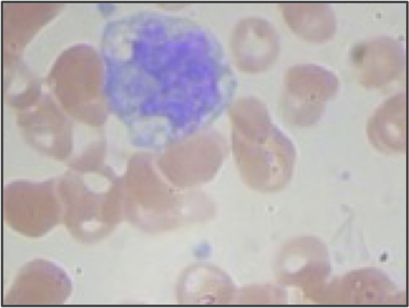
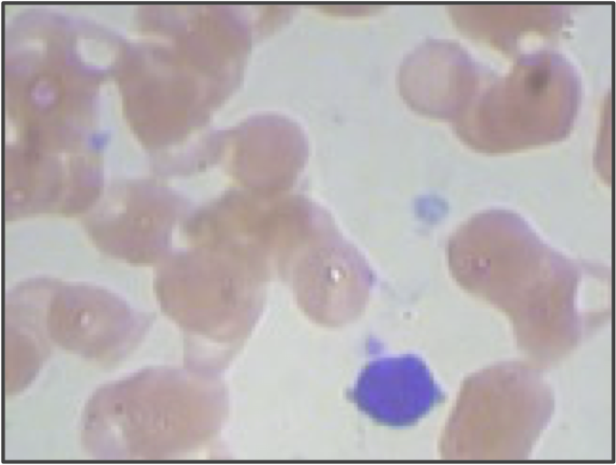

Introduction: How Are Blood Cells Counted?
by Phillip Compeau, with software tutorials by Nicole Matamala
Your doctor sometimes wants to count your blood cells to ensure that they are within healthy ranges as part of a complete blood count. Blood cells are divided into red blood cells (RBCs), which transport oxygen via a molecule called hemoglobin, and white blood cells (WBCs), immune system cells that help to identify and attack foreign cells.
The classic device for counting blood cells is the hemocytometer. As illustrated in the video below, after a technicial filters a tiny amount of blood onto a gridded slide, they then count the number of cells of a given type in squares on the grid. This number can then be multiplied to give an estimation of the expected number of cells within a larger volume of blood.
STOP: What problems can you imagine might happen with using a cytometer to estimate blood cell counts?
The hemocytometer is a simple, even elegant device, but you would not be wrong if you think it seems a bit old-fashioned. In fact, it was invented by Louis-Charles Malassez 150 years ago. Can we hope for a more modern approach in which we train a computer to count blood cells?
In this module, we will focus on identifying WBCs in cellular images, which can provide a great deal of information to scientists counting these cells. A low WBC count may indicate a host of diseases that leave the immune system susceptible to attack; a high WBC count may indicate that an infection is present, or that a disease like leukemia has caused overproduction of WBCs.
WBCs further divide into subclasses based on their structure and function, and some other diseases may cause an abnormally low or high count of a specific subclass of WBCs. We therefore to not only identify WBCs in cellular images but also classify these WBCs into their appropriate types.
We will work with a dataset containing blood cell images depicting both RBCs and WBCs. As shown in the figure below, these images contain the three main families of WBCs: granulocytes, lymphocytes, and monocytes. Granulocytes have a multilobular nucleus, which consists of several round “lobes” that are linked by thin strands of nuclear material. Monocyte and lymphocyte nuclei only have a single lobe, but the resulting shapes of the nuclei are quite different: lymphocyte nuclei tend to have a more rounded shape (taking up a greater fraction of the cell’s volume), whereas monocyte nuclei have a more irregular shape.
| Granulocyte | Monocyte | Lymphocyte |
|---|---|---|
 |
 |  |
Three images from the blood cell image dataset showing three types of WBCs. (Left) A specific subtype of granulocyte called a neutrophil, illustrating the multilobular structure of this WBC family. (Center) A monocyte with a single, irregularly-shaped nucleus. (Right) A lymphocyte with a round nucleus. (In the provided dataset, these cells correspond to image IDs 3, 15, and 20, respectively.)
Our goal is twofold: first, can we excise the WBCs from the images? Second, can we train a computer to classify these WBCs by family? To perform these tasks, we will enlist CellOrganizer, a powerful software resource that can perform automated analyses on cellular images.
When you look at the cells in the figure above, you may think that our tasks will be easy. After all, identifying WBCs is simply a matter of excising the large purplish regions. our eyes are the result of billions of years of evolution to be able to identify patterns and differentiate objects. For that reason, we will see that training a computer to “see” these images in order to separate and classify WBCs is trickier than you might think.